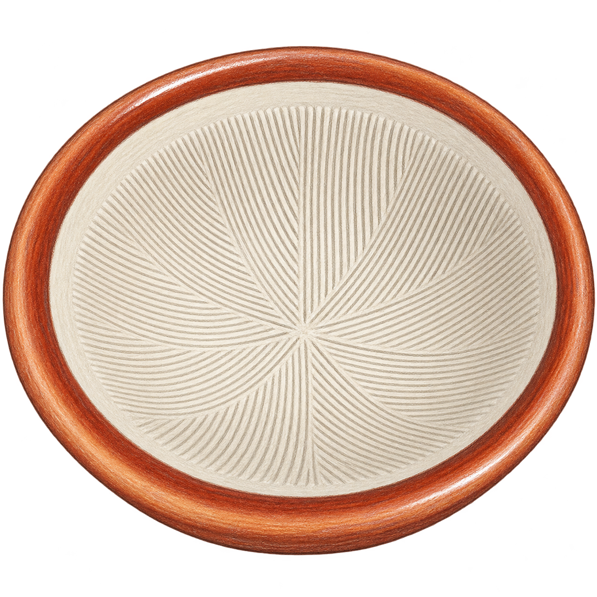
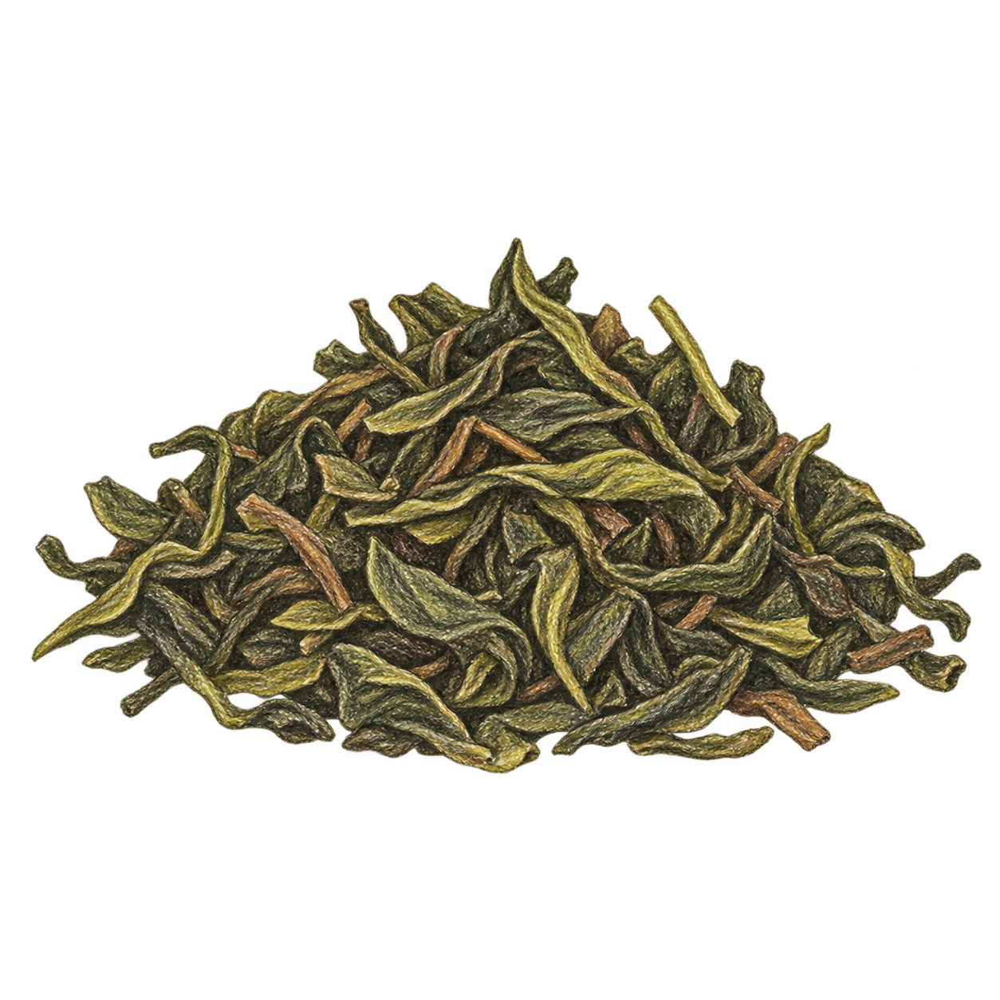
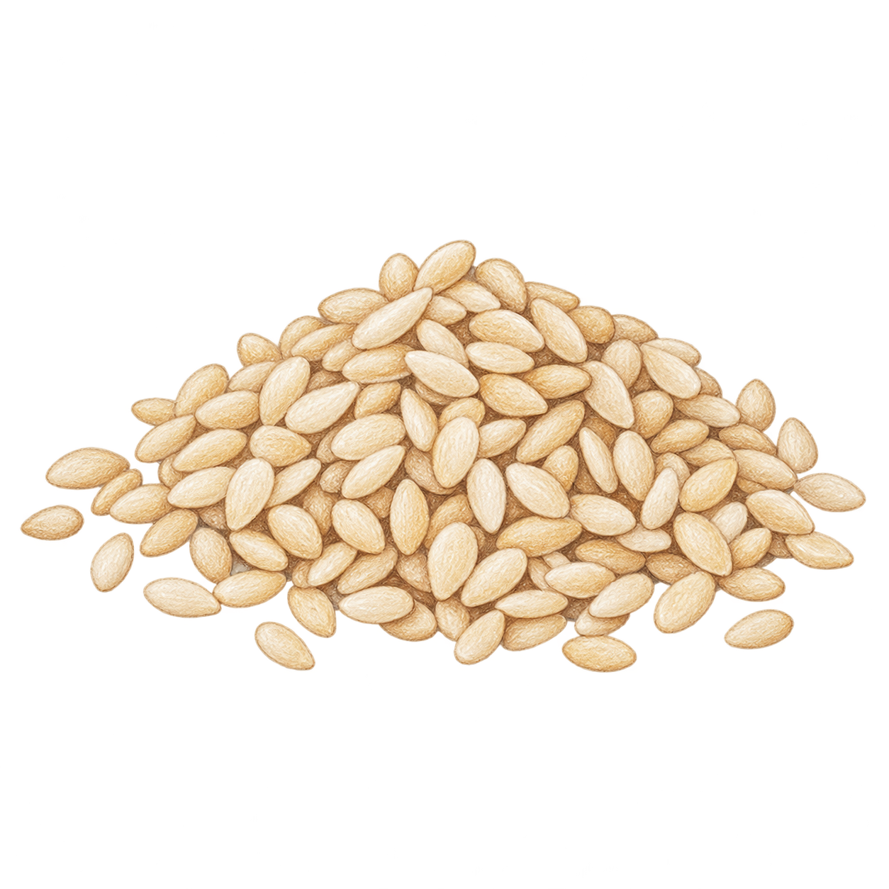
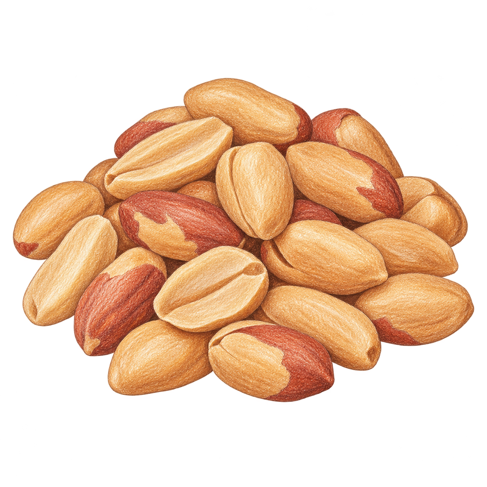
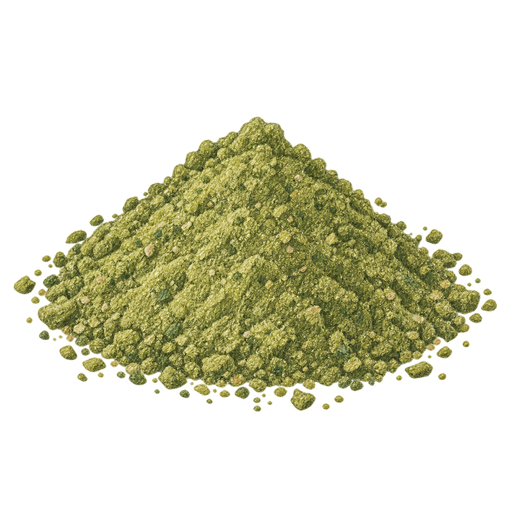
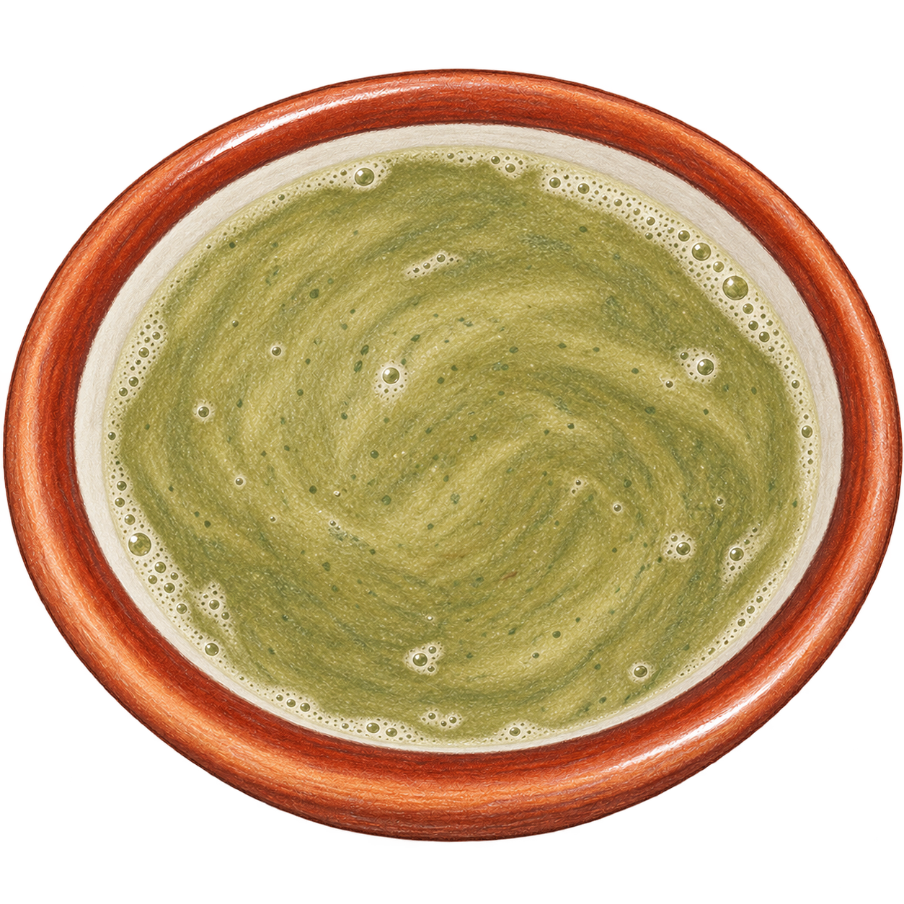
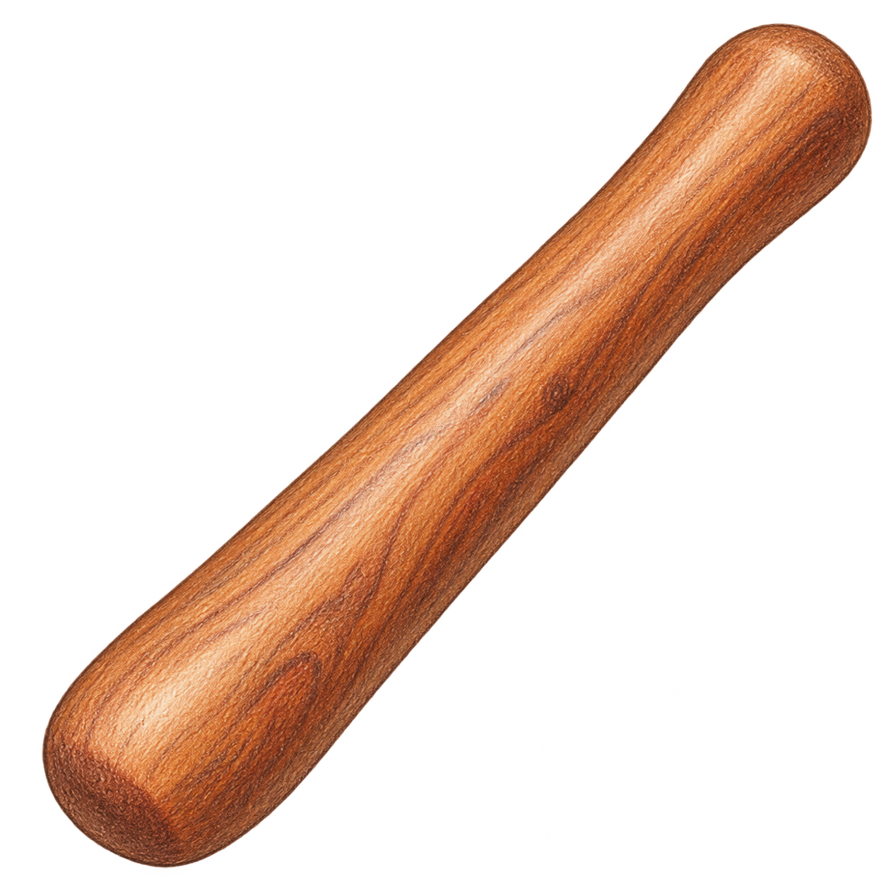
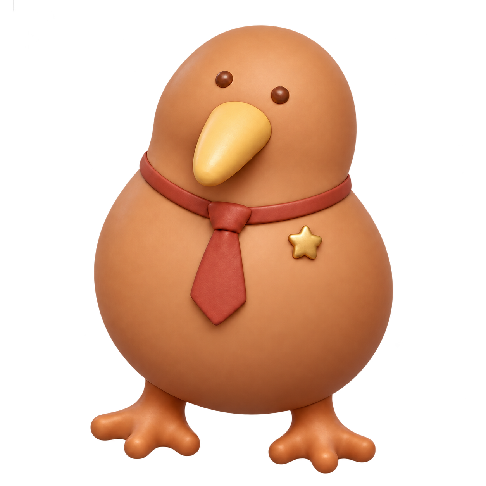

A LITTLE MOMENT, TOGETHER
共下擂茶。
把步調放慢，
一起擂一碗暖暖的茶。
- 選料
- 慢磨
- 品茶
01 ／ 把香氣放進碗裡
調一碗自己的滋味。
材料可以重複添加，自由搭配份量；選好後，再開始研磨。
不趕時間，也沒有分數。跟著自己的節奏就好。







一碗茶，從這裡開始等待香氣入碗
茶葉 0 匙 · 芝麻 0 匙 · 花生 0 匙

我也在這裡，
陪你慢慢來。